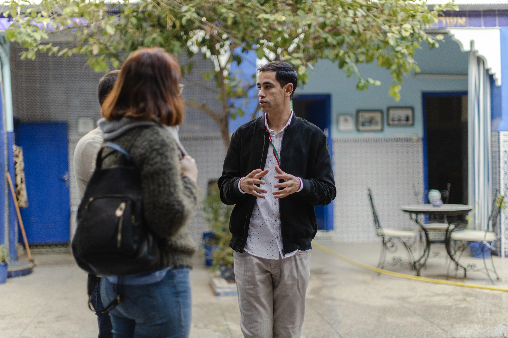
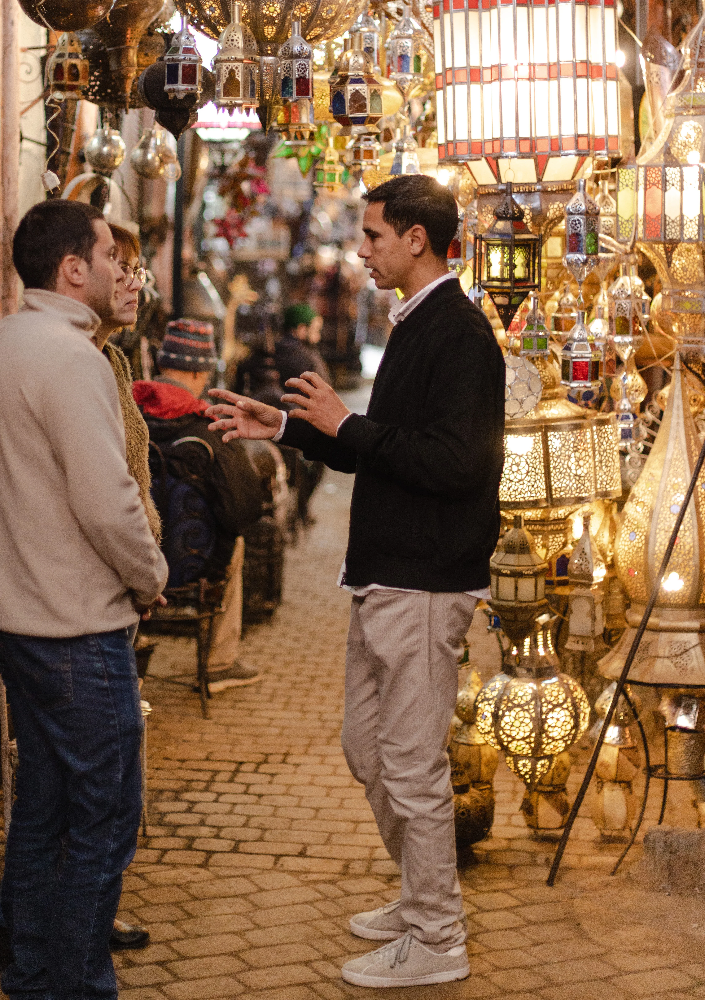
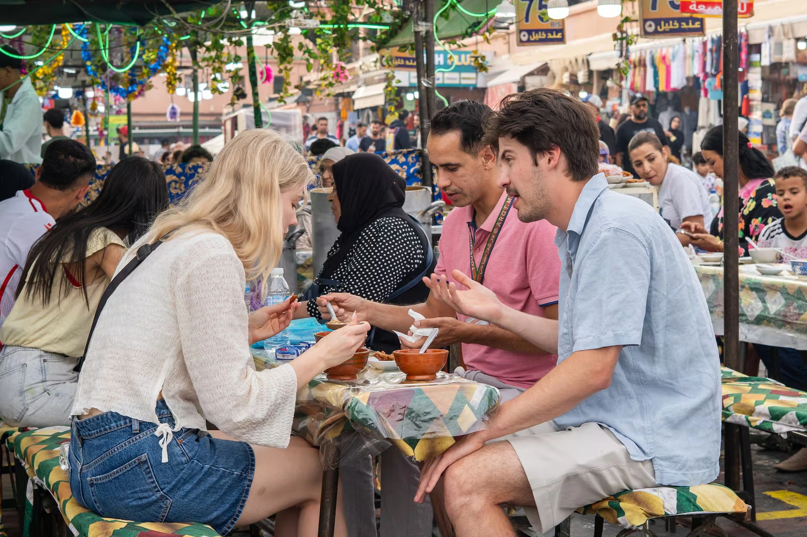

Our curated historical, cultural, and culinary walking tours through the medina and souks.

A walking tour in the parts of Marrakech most tourists never see, taking place in the historic Jewish quarter (Mellah) with its beautiful synagogue and impressive old cemetery, passing a bustling Souiqa, stopping by a local Ferran, and wandering into the quieter edges of the souks.

The ultimate historical introduction to Marrakech, exploring the bustling medina with its colorful streets, hidden alleys and souks, and two of the city's most magnificent heritage sites.

A walking food tour featuring a running tasting menu through trusted local stalls, from savory Msemmen and Harira to authentic Tanjia and Moroccan pastries.
Specialized hands-on experiences, desert outings, and immersive cultural workshops.
Interactive artisan sessions where you can learn pottery, tile-making, or leather crafting directly from master craftsmen.
Shop for fresh spices in the souks with your guide, then learn to cook a traditional clay-pot tagine from scratch.
Authentic local bathhouse (Hammam) cultural rituals with traditional black soap and eucalyptus exfoliation.
Tell me what you're curious to discover and I'll suggest the right option or build a custom itinerary.